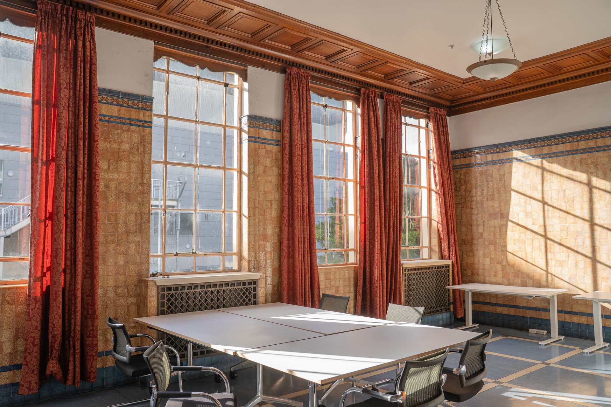

Heritage character with room to move
Once an exclusive dining lounge for distinguished station guests, the Waiting Room is now a refined, light-filled space with high ceilings, grand heritage windows and original timber flooring.
Its intricately detailed ceiling and open central floor suit both quiet, focused work and more expressive movement.
Work, move, display
- Dance rehearsals and movement workshops
- Creative co-working and boutique meetings
- Photography and video sessions
- Art displays and cultural events
- Private functions and community gatherings
Natural light throughout the day



More photographs

See how the room could work for you
Share your preferred use, date and practical requirements with the venue team.